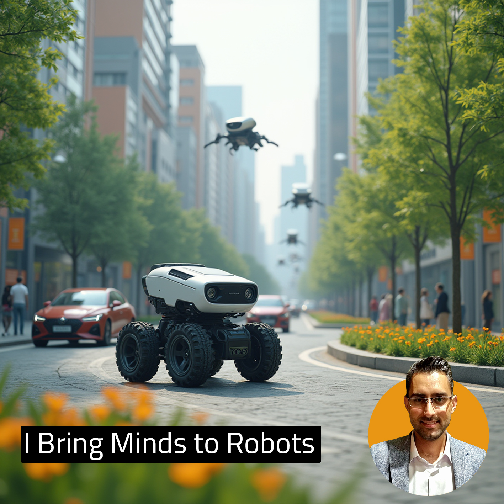

Davood Dorostkar
Robotics Engineer

January 2024
Autonomous Tesla Car Simulation in CARLA and ROS2
Used CARLA Simulator and ROS2 to simulate a Tesla car under various scenarios. Explored different controllers such as PID, Stanley, LQR, and MPC to determine their suitability for autonomous vehicle control in specific situations. Each controller was implemented in C++, demonstrating robust handling of complex scenarios. Performance was analyzed through rigorous simulation testing, providing insights into the controllers' effectiveness.
October 2024
Utilizing LIDAR and Camera for Autonomous Vehicles
Visualized the car's perception with RVIZ2 while leveraging ROS2 as the backend and CARLA as the simulation environment. Integrated advanced camera and LIDAR sensors, enabling the autonomous system to interpret and respond to its surroundings effectively. The setup showcased the synergy between state-of-the-art sensors and simulation platforms for real-world applications.
July 2024
Mapping for Autonomous Robot
Created an occupancy grid map using Python, leveraging data from a LIDAR sensor for indoor autonomous robot navigation. Developed algorithms to interpret sensor data and accurately depict environmental obstacles. The work demonstrated advanced mapping techniques essential for precise and reliable robotic navigation in confined spaces.
February 2024
Visualizing an Autonomous Car in CARLA with CarlaViz
Implemented visualization of an autonomous car using CarlaViz, highlighting a user-friendly and intuitive interface. The simulation featured a comprehensive traffic scenario with various road configurations, traffic lights, and adherence to driving rules. The visualization encompassed critical data, including road geometries, intersections, vehicle behavior, and sensor outputs, offering a complete overview of the autonomous system's operation.
December 2023
Path Planning for Autonomous Vehicle in CARLA
Designed and executed path planning algorithms in Python for autonomous vehicles using the CARLA simulator. Key techniques included:
- A* for high-level mission planning
- combined lattice, trapezoidal and spline methods for smooth trajectory generation
- Stanley for lateral control
- PID for longitudinal control
October 2023
Controller Design for Autonomous Vehicle in CARLA
Implemented a range of control algorithms, including:
- PID for longitudinal motion control
- Stanley and Pure Pursuit for lateral control
- Stanley for lateral motion control
July 2021
Design and Simulate a Wheeled Robot in Gazebo
Developed a complete simulation of a four-wheel robot in Gazebo using URDF, incorporating a LIDAR sensor for environmental mapping. The simulation emphasized modular design and the seamless integration of hardware components, showcasing the potential for custom robotic systems.
June 2021
Path Planning & Control a Turtlebot in ROS1
Simulated a Turtlebot robot in ROS1, creating a predefined path and developing a controller in C++ to maintain adherence to the trajectory. The project demonstrated the integration of control algorithms and path-planning techniques for efficient robot navigation.
October 2019
IoT Smart Attendance Device
Developed an innovative IoT-based smart attendance device featuring a robust three-layer security system. The system utilized a fingerprint sensor for secure user authentication over the internet. This project highlighted the application of IoT in enhancing security and automation.


Certifications
Get in touch
I'm always excited about new opportunities and collaborations. Whether you're looking to bring a cutting-edge idea to life, need a software solution for your robotics project, or want to push the boundaries of autonomous systems, I'd love to hear from you.
If you're interested in working together, sharing ideas, or discussing how we can collaborate, feel free to reach out. Let's explore how we can combine our expertise to create impactful, innovative solutions.
Get in touch today, and let's build the future!
© Untitled. All rights reserved. Design: HTML5 UP.